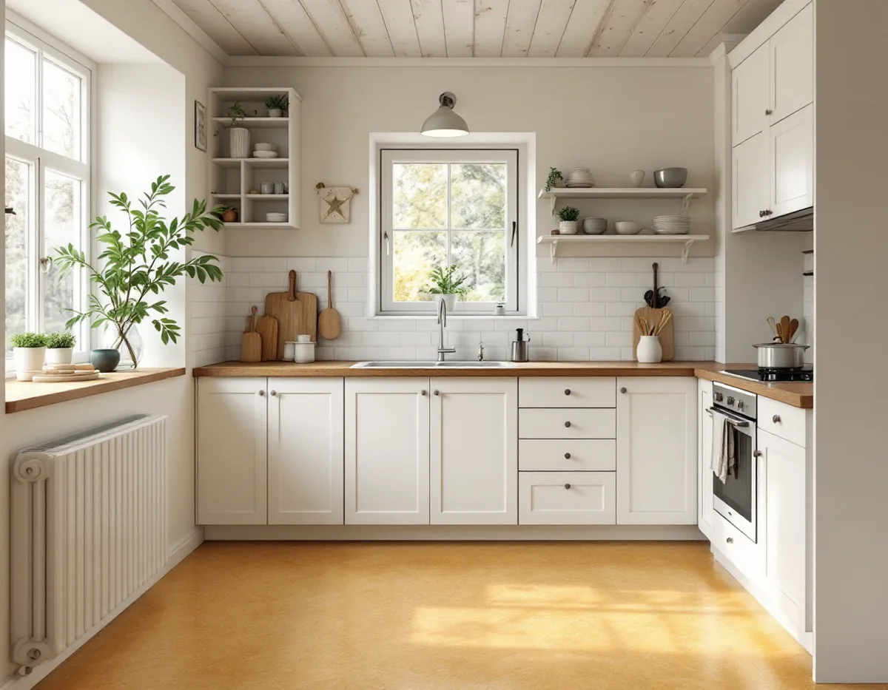
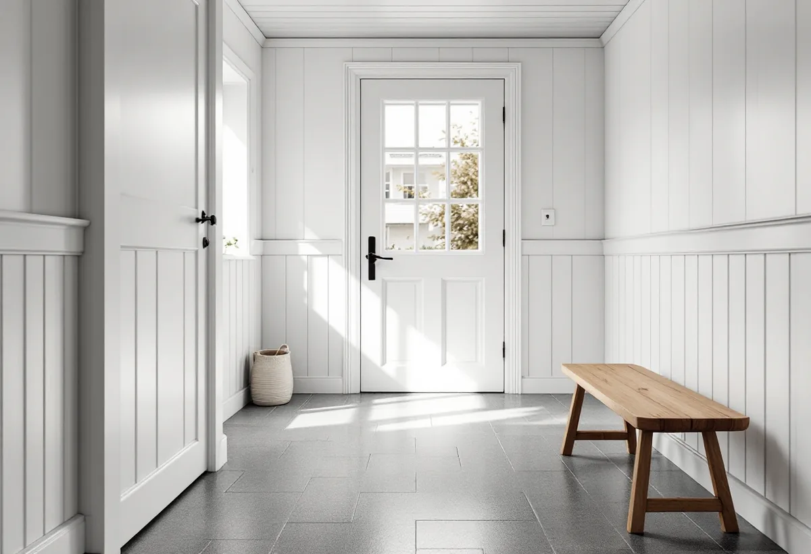

Platsbesök
Vi tar reda på vilken matta som ligger, hur den har skötts och vad underlaget tål.

I en liten stuga betyder golvet i hall och kök mycket, eftersom det är där alla går.
Beskriv jobbet kort.
Något blev fel. Kontrollera uppgifterna eller ring 08 12 410 276.
Vi tittar på jobbet på plats innan du får offert.
Du ser vad som ingår och vad det kostar.
Vi drar av ROT direkt och sköter ansökan.
Geal Entreprenad AB, Bromma. Org.nr 559303-7566.

Linoleum, plastgolv och gummi tål slitage, och en gammal matta kan ibland renoveras i stället för att rivas. Geal Entreprenad AB lägger och renoverar golv i Tallkrogen, Svedmyra, Sköndal, Gubbängen och övriga Farsta, med gratis platsbesök, skriftligt kostnadsförslag och ROT-avdraget direkt på fakturan.
Svedmyra byggdes enligt Stadsmuseets Stockholms Spår ut med småstugor med början 1931–33. Självbyggarna fick ett förmånligt lån och betalade resten med eget arbete, och Småstugebyrån stod för instruktioner och byggmaterial. Materialet var monteringsfärdigt, och väggar och takstolar lyftes på plats i stora element. Tallkrogen byggdes från 1933, och även där levererades byggnadsdelarna färdiga från fabriken.
Stadens områdesfakta för 2025 räknar 945 bostäder i småhus i Tallkrogen, 359 i Svedmyra och 1 595 i Sköndal. I små rum med mycket slitage är golvmaterialet ett praktiskt val lika mycket som ett utseendeval, och det är där halvhårda golv som linoleum, plast och gummi kommer in.
Ordet linoleum kommer av linolja. Enligt Golvbranschen består bindemedlet av vegetabiliska oljor som linolja och tallolja med träharts, och det härdar när det reagerar med luftens syre. Fyllmedlet är trämjöl, ibland korkmjöl, och kalkstensmjöl. Mönstret går genom hela slitskiktet. Mattorna tillverkas oftast på en bärare av juteväv, i två meters bredd och två till fyra millimeters tjocklek, och plattor finns bland annat i 500 × 500 millimeter.
Linoleum tål nötning och repor men inte ständig väta, och det ska inte läggas i våta utrymmen. En ny matta kan ha en gul ton, så kallad oxidationsgulning, som enligt branschen försvinner helt efter några dygn i dagsljus. Ett färgprov bör därför bedömas först när det har legat i dagsljus. För den som vill dämpa stegljud finns linoleum med ett skikt av korkbaserad linoleum eller med en baksida av plastskum.
Golvbranschens riktlinjer RENOV. 24 beskriver hur halvhårda golv av PVC, linoleum och gummi kan renoveras i torra utrymmen. Först kontrolleras vilken matta det är, vilken ytbehandling eller polish som finns på ytan och vad du förväntar dig av resultatet. Riktlinjerna påpekar att ett golv i dåligt skick ibland behöver en täckande färg för att dölja skador, och att en transparent lack då inte räcker.
Polishen löses med en tvättlösning som får verka i ungefär en kvart, och golvet våtslipas. Därefter nollställs golvet genom att tvättas minst två gånger med rent vatten, och efter en lätt torrslipning läggs ytbehandlingen på. Ett linoleumgolv ska grundas med en grundlack, och oftast behövs två omgångar färg och två omgångar lack, eller bara två omgångar lack om ytan ska vara transparent. Uppvik och socklar ingår normalt inte om det inte har avtalats.
Det finns plastgolv som inte innehåller PVC, tillverkade av till exempel polyolefin eller polyeten. Enligt Golvbranschen har de oftast ett ytskydd av akrylat, och då behövs inget vax eller polish. Mattorna är två millimeter tjocka och kan vikas upp på väggen. Gummigolv har hög slitstyrka, bestående elasticitet och god stegljudsdämpning, och finns i rullar på två till fyra millimeter eller som plattor upp till nio millimeter.
Ett gummigolv levereras oftast med en skyddsyta som tas bort vid byggstädningen. I en hall där grus och väta kommer in från trädgården kan ett tåligt golv vara värt mer än ett varmt. Ska plastmattan i ett våtrum bytas gäller branschens regler för våtrum, och mer om det finns på sidan om badrumsrenovering.
Keramiska plattor är tyngre än de flesta andra golvmaterial. Golvbranschen skriver att underlaget måste vara tillräckligt bärande och att det i vissa fall behöver förstärkas. Klinker har en låg vattenabsorption, vanligen 0–6 procent, och granitkeramik högst 0,5 procent. Granitkeramik är frostbeständig och kan därför läggas även utomhus, till exempel på trappan utanför entrén.
Läggs golvvärme under klinkern får värmen enligt branschen slås på tidigast efter 28 dygn och sedan höjas med 3 °C per dygn. Terrakottaplattor är porösa och ska inte läggas på ett underlag med risk för fukt underifrån, och inte heller i kök där fett kan ge fläckar. Ska taket ses över i samma veva finns mer under takläggare i Farsta, och om golvtyper i stort på sidan om golvläggning.
Vi tar reda på vilken matta som ligger, hur den har skötts och vad underlaget tål.
Vi går igenom om mattan kan renoveras eller om ett nytt golv är bättre.
Renovering, rivning, underlag och nytt golv redovisas var för sig.
Polish tas bort eller den gamla mattan rivs och underlaget lagas.
Nytt golv läggs, eller den gamla mattan får färg och lack.
Du får råd om städning och underhåll för just din golvtyp.
Att slipa och byta golv i ett småhus du äger ger rotavdrag enligt Skatteverket. Avdraget är 30 procent av arbetskostnaden, högst 50 000 kr per person och år, och rot och rut får tillsammans vara högst 75 000 kr.
Mattor, plattor, lack och resekostnader ger inget avdrag. Geal drar avdraget direkt på fakturan.
Golvytan, om den gamla mattan kan renoveras eller måste rivas och hur mycket underlaget behöver lagas avgör mest. Klinker på träbjälklag kan kräva förstärkning. Efter ett gratis platsbesök får du ett skriftligt kostnadsförslag.
Parkett, trägolv, klinker och slipning.
Golvläggning i Stockholm →Takbyte, takbesiktning och plåtarbeten.
Takläggare i Farsta →Tallkrogens småstugor och villorna vid Magelungen.
Takrenovering i Farsta →Småstugor, kulturmiljö och gränser.
Attefallshus i Farsta →ABC-staden, radhus och asbest i våtrummet.
Badrumsrenovering i Farsta →En ny bostad i villan.
Byggföretag i Farsta →Tegel, puts, skivor och trädetaljer.
Fasadmålning i Farsta →Radhus, grupphus och fasadskivor.
Fasadrenovering i Farsta →Småstugor och radhus.
Fönsterbyte i Farsta →Småstugorna i Svedmyra och Sköndal.
Fönsterrenovering i Farsta →Slipa trägolvet och gå igenom resultatet.
Golvslipning i Farsta →ABC-staden, radhus och villor.
Köksrenovering i Farsta →Småstugor, ädelputs och radhus i Söderort.
Målare i Farsta →Skorstensbeslag och plåttak i Farsta.
Plåtslagare i Farsta →Förråd, gäststuga och skärmtak vid småstugan.
Snickare i Farsta →Radhusen, längan och föreningen.
Takbyte i Farsta →Tapet i 1960-talets lägenheter.
Tapetsering i Farsta →Småstugorna och trädgårdssidan.
Tillbyggnad i Farsta →Småstugorna och typritningarna.
Totalrenovering i Farsta →Eller ring 08 12 410 276, mån–fre 08–17.
Beskriv jobbet kort.
Något blev fel. Kontrollera uppgifterna eller ring 08 12 410 276.